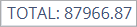
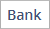
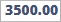
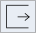
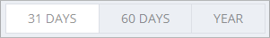
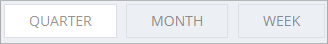
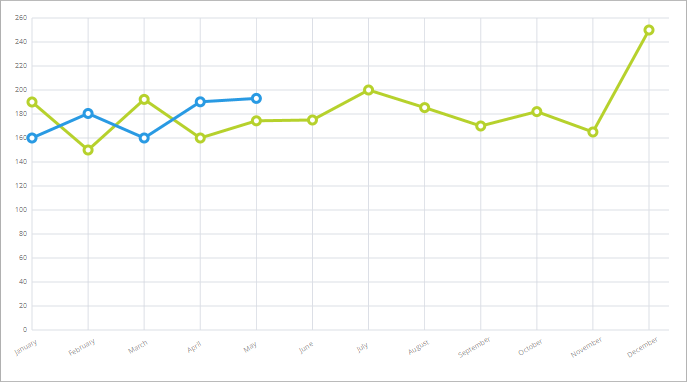
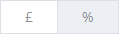
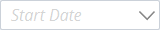

The Dashboard
Available to Online Services Subscribers only. Please click here for more information.
Dashboard Overview
Accounting Software screenshot dashboard main
The Dashboard component displays an overview of key information relating to your personal finances.
It comprises up to 6 customisable information panels or ‘dashlets’ which each provide an insight into certain aspects of these finances:
The information that most dashlets display is configurable. To edit, click on the dashlet to access its configuration screen.
Add dashlets
Dashlets can be added to the component by clicking the yellow ‘Add dashlet’ button (see below) in the top right of the screen (if this button is not visible, it means all available dashlets are already displayed).
Accounting Software screenshot home add dashlet_button
When you click the ‘Add dashlet’ button, a menu will appear (see below) displaying all available (i.e. currently hidden) dashlets.
Accounting Software dashlet home add button menu
To add a dashlet, simply select it from this list.
Remove dashlets
Dashlets can be removed from the dashboard by clicking the ‘Remove Dashlet’ button (shaped like an ‘X’) in the top right of the panel:
Accounting Software screenshot home remove dashlet button
Rearrange dashlets
Accounting Software screenshot home drag dashlet
Dashlets can be rearranged as required by left click/dragging and dropping the (already visible) dashlet into the desired position. In the example above the Account Balances dashlet is being dragged/dropped into the bottom left corner of the component.
The Dashlets
Account Balances

Accounting Software Screenshot balances dashlet thumbnail
The Account Balances dashlet (as visible in the main dashboard, see image above) displays the current balances for the accounts selected (up to a maximum of 6 accounts). To view your Account Balances in greater detail, click on the dashlet to select it.
Accounting Software screenshot account balances
This launches the dashlet’s configuration screen.
This screen (see above) displays a list of all bank, loan, cash and credit card accounts in the system and their current balances.
Within this window we can select which accounts are visible in the main dashboard thumbnail, plus click a button to examine any of the accounts listed here in further detail in the Accounts, Balances & Budgeting component.
The following values, buttons and icons are visible within the Account Balances Dashlet:
- Return to main dashboard screen - Clicking this button returns you to the main dashboard
-  Account Totals - Displays the total for all accounts visible in the dashlet
- Account Visibility Checkbox - Tick this box to make the account visible in the main Dashboard thumbnail.
-  Account Name - Displays the account name.
- Account Type Icon - Displays the account type (bank, loan, cash or credit card).
 Account Negative Balance Warning - This warning icon appears when your account balance falls below zero. Click the icon to go to the Look Ahead Dashlet.
Account Negative Balance Warning - This warning icon appears when your account balance falls below zero. Click the icon to go to the Look Ahead Dashlet.- Account Overdraft Limit Warning - The red warning icon appears if your account balance falls below your set overdraft limit. Click the icon to go to the Look Ahead Dashlet.
-  Account Total - Displays the current total for the account in focus.
- Rearrange Accounts Icon - Drag and drop this icon to change the order of accounts in the dashlet.
-  Go To Account - Clicking this button locates the account in focus in the Accounts, Balances & Budgeting component.
Net Worth
Accounting Software Screenshot net worth dashlet thumbnail
The Net Worth dashlet (as visible in the main dashboard, see image above) comprises a bar chart displaying your total assets and debt, and the difference between the two (i.e. your Net Worth).
The dashlet contains the following data fields:
- Assets - Your total assets displayed in the software’s base currency. This figure includes all accounts with the account type ‘Asset’, ‘Bank’, ‘Cash’, or ‘Deposit’.
- Debt - Your total debt displayed in the software’s base currency. This figure includes all accounts with the account type ‘Loan’, ‘Credit Card’, or ‘Liability’.
- Net Worth - The difference between your total assets and your total debt, displayed as a single figure.
To view your Net Worth in greater detail, click on the dashlet to select it.
Accounting Software screenshot networth
This screen comprises a bar chart divided into two panels which detail all accounts pertaining to your assets and debt total:
- Assets (Left Panel) - This part of the bar chart displays individual values for every ‘Asset’, ‘Bank’, ‘Cash’, or ‘Deposit’ account in the system, plus a total value for all assets at the top of the panel.
- Debt (Right Panel) - This part of the bar chart displays individual values for every ‘Loan’, ‘Credit Card’, or ‘Liability’ account in the system, plus a total value for all debt at the top of the panel.
N.B. Hovering your mouse over any bar in the chart displays the value for the represented account (see below).
Accounting Software screenshot networth hover
Look Ahead
Accounting Software screenshot look ahead thumbnail
The Look Ahead dashlet displays a chart showing the forecasted balance for a selected account (or account group) for a defined period, as set in the dashlet’s configuration screen.
If your account balance is due to fall below zero (or your overdraft limit), the dashlet will display a warning icon on that date.
To configure the information displayed in the chart, click on the dashlet to select it.
Accounting Software screenshot look ahead dashlet 1
Here you can set which account or account group is displayed for this panel in the main dashboard component (n.b. you can only select one account/account group at a time), choose the forecast period length, plus view an analysis of the transaction/balance data for any point on the chart.
The dashlet comprises 3 sections:
- Top Toolbar - Toggle Chart Period
- Left Panel - Select Account/Account Group
- Right Panel - The Look Ahead Chart
Top Toolbar
The top toolbar displays the following buttons:
- Return to main dashboard screen - Clicking this button returns you to the main dashboard screen
-  Toggle Chart Period - Toggles between 31 Days/60 Days/1 Year for the forecasted period displayed.
Left Panel
The left column (see below) enables you to set which account/account group is visible in the chart (n.b. only accounts which have transactions/automated transactions entered against them will appear in this list). Tick the relevant account or account group to select it.
Accounting Software screenshot look ahead dashlet 2
Right Panel
Accounting Software screenshot look ahead dashlet 4
The right panel comprises the ‘Look Ahead’ chart itself, displaying your data as set in the previous two sections.
The ‘X’ axis displays the date and the ‘Y’ axis displays account balance.
N.B. Hovering your mouse over any date point on the chart (see below) displays transaction and balance data for this date for the account/account group selected (click ‘X’ to close this box).
Accounting Software screenshot look ahead dashlet 3
Actuals
Accounting Software screenshot actuals thumbnail
The Actuals dashlet shows a comparison of spending (or income) for a particular account or account group. This is displayed on a weekly, monthly or quarterly basis, and also shows a comparison between the current and previous years’ figures.
Each point in the chart represents the total spending (or income) for the account/account group for that week/month/quarter.
To configure the information displayed in the chart, click on the dashlet to select it.

Accounting Software screenshot balances over time
This launches the dashlet’s configuration screen. This comprises four sections:
Top Toolbar
The top toolbar displays the following buttons:
- Return to main dashboard screen - Clicking this button returns you to the main dashboard screen
-  Toggle Chart Period - Toggles between Quarters/Months/Weeks for the periods displayed.
Left Toolbar
Here you can set which account or account group is displayed in the chart (tick the relevant checkbox to select it).
Accounting Software screenshot balances over time selector
Right toolbar
Here you can set which year(s) are included in the chart by ticking/unticking that year’s checkbox (see below).
Accounting Software button toggle chart year
Chart

This section displays the chart (using the currently defined settings, see above) as it will appear in the dashboard thumbnail.
Income by Account
Accounting Software screenshot income by account thumbnail
This dashlet comprises a bar or pie chart (as defined by the user) displaying your income broken down by account, either as a percentage of total income or in units of base currency.
To configure the information displayed in the chart, click on the dashlet to select it.
Accounting Software screenshot income by account
Here you can set which accounts are displayed for this panel in the main dashboard component, choose whether the account totals are displayed as a percentage or as base currency, set the chart type (pie or bar chart), and (if required) set a start and/or end date for the chart displayed.
The dashlet comprises 3 sections:
- Top Toolbar - Set Chart Type/Chart Unit/Date Range
- Left Panel - Select Account(s)/Show Other
- Right Panel - The Income By Account Chart
Top Toolbar
This toolbar offers the following buttons/options:
- Return to main dashboard screen - Clicking this button returns you to the main dashboard screen
-  Toggle Chart Unit - Toggles between % and £ (or your base currency) for your account totals.
- or Toggle Chart Type - Toggles between bar and pie chart types.
-  Start Date - Sets a Start Date for your chart totals
- End Date - Sets an End Date for your chart totals
Left Panel
The left column(see below) enables you to set which accounts/account groups are visible in the chart. Tick/Untick the relevant account to show/hide it.
The ‘Show Other’ checkbox affects how the ‘Various Accounts’ value is calculated (see below for more details).
Accounting Software screenshot income by account picker
If you tick an account group in this list, then the accounts contained within the group are automatically unticked, and the account group is represented by a single value in the chart (see below).

Accounting Software screenshot income by account picker group
In this example, the ‘Income’ account group has been ticked, thus automatically unticking the accounts contained within this group, and representing them as a single combined value in the chart.
Right Panel
![Accounting Software screenshot income by account right panel(images/screenshot_income_by_account_right_panel_haz.gif)
The right panel comprises the ‘Income By Account’ pie or bar chart itself, displaying your data as set in the previous two sections.
The chart also includes an item, entitled ‘Various Accounts’, which combines all accounts which each total less than 1% of total income into a single value.
N.B. Hovering your mouse over the ‘Various Accounts’ item displays the individual values for the accounts which make up this item (see below).
Accounting Software screenshot income by account various
Please note that when the ‘Show Other’ box is ticked in the left column (see above), the ‘Various Accounts’ value includes all unticked accounts in the ‘Select Account(s)’ column.
This is used if you wish to compare certain accounts against the remainder of your income (for example, if you wished to compare your Salary account’s income compared to everything else combined, you would tick ‘Salary’ and ‘Show Other’ and leave everything else unticked).
Spending by Account
Accounting Software screenshot spending by account thumbnail
Similar to the Income by Account dashlet (see above), this dashlet comprises a bar or pie chart (as defined by the user) displaying your spending broken down by account, either as a percentage of total expenditure or in units of base currency.
To configure the information displayed in the chart, click on the dashlet to select it.
Accounting Software screenshot spending by account
Here you can set which accounts are displayed for this panel in the main dashboard component, choose whether the account totals are displayed as a percentage or as base currency, set the chart type (pie or bar chart), and (if required) set a start and/or end date for the chart displayed.
The dashlet comprises 3 sections:
- Top Toolbar - Set Chart Type/Chart Unit/Date Range
- Left Panel - Select Account(s)/Show Other
- Right Panel - The Spending By Account Chart
Top Toolbar
This toolbar offers the following buttons/options:
- Return to main dashboard screen - Clicking this button returns you to the main dashboard screen
- Toggle Chart Unit - Toggles between % and £ (or your base currency) for your account totals.
- or Toggle Chart Type - Toggles between bar and pie chart types.
- Start Date - Sets a Start Date for your chart totals
- End Date - Sets an End Date for your chart totals
Left Panel
The left column(see below) enables you to set which accounts/account groups are visible in the chart. Tick/Untick the relevant account to show/hide it.
The ‘Select All’ checkbox enables you to select or deselect all individual accounts.
The ‘Show Other’ checkbox affects how the ‘Various Accounts’ value is calculated(see below for more details).
Accounting Software screenshot spending by account selector
If you tick an account group in this list, then the accounts contained within the group are automatically unticked, and the account group is represented by a single value in the chart (see below).
Accounting Software screenshot spending by account group
In this example, the ‘Motor’ account group has been ticked, thus automatically unticking the accounts contained within the group, and representing them as a single combined value in the chart.
Right Panel
Accounting Software screenshot spending by account chart
The right panel comprises the ‘Spending By Account’ pie or bar chart itself, displaying your data as set in the previous two sections.
The chart also includes an item, entitled ‘Various Accounts’, which combines all accounts which each total less than 1% of total expenditure into a single value.
N.B. Hovering your mouse over the ‘Various Accounts’ item displays the individual values for the accounts which make up this item (see below).
Accounting Software screenshot spending by account various
Please note that when the ‘Show Other’ box is ticked in the left column (see above), the ‘Various Accounts’ value includes all unticked accounts in the ‘Select Account(s)’ column.
This is used if you wish to compare certain accounts against the remainder of your expenditure (for example, if you wished to compare your Food account’s expenditure compared to everything else combined, you would tick ‘Food’ and ‘Show Other’ and leave everything else unticked).